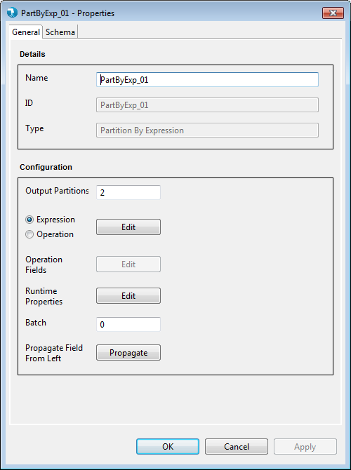
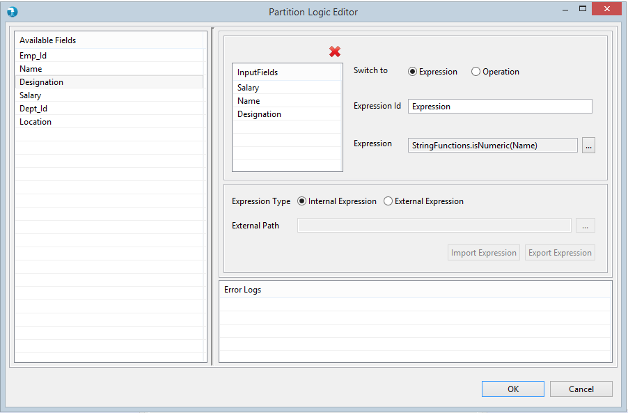
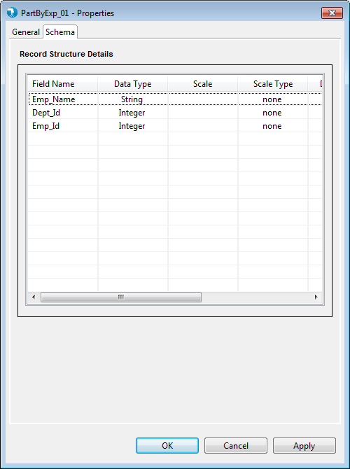
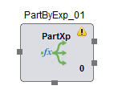
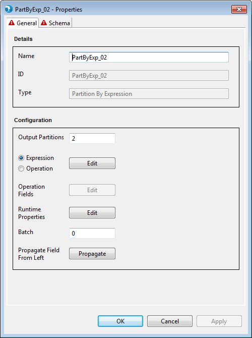
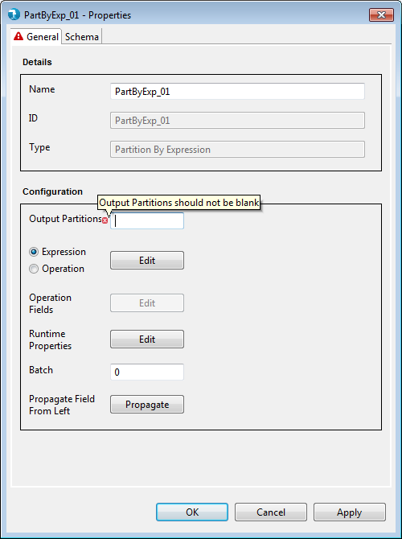
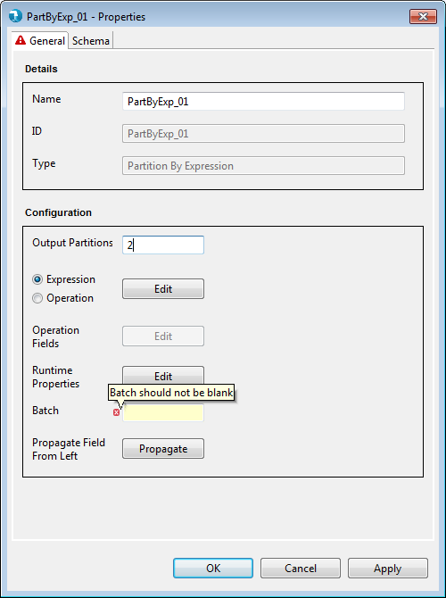
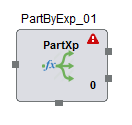

Properties for the Partition By Expression component can be
viewed by Double click->component on canvas.
The properties contain a 'General' tab and a 'Schema' tab.
Common properties are present in the General tab.
Schema tab displays the option to accept the field schema i.e. field name, data type, scale etc.

- Name - Name is an identifier for the component.
This is a mandatory property. This property is pre-populated
with the component name, i.e. 'PartByExp' followed by an incremental
number. It can be changed to any custom name. The name property has
following restrictions:
- Must be specified and should not be blank.
- Must be unique across the job.
- Accepts only alphabets (a-z), numerals (0-9)
and 4 special characters: "_", "-", ",", " " (space)
- ID - ID signifies unique Id of component. This Id is generated at the time of component creation. This is a non editable field.
- Type - Type further categorizes the
component to detailed operation that it intends to perform. Here it
is of type Partition By Expression.This is a non editable field.
-
Output Partitions -
output partitions accepts integer value greater than 1.
The default value for output partitions is 2.
output partitions can have a maximum value of 24.
output partitions is a mandatory property.
- Expression Editor Or Operation Class -
Edit option of Partition By Expression property window allows user to choose only one
option,i.e either Expression or Operation.

Operation Class : Selecting Operation opens up a
grid for the user to select for an existing operation class or
create a new one. The operation class name can be parameterized
which will be resolved at runtime. Click on Operation Class
to know more about creating and using Standard classes here.

Expression Editor : Selecting Expression opens
expression editor window. Click on Expression Editor to know
more about Expression Editor .

Externalizing Partition By Expression Transformations : Externalizing Transformations feature enables user to externalize expression, class and output fields of Operation Editor. Its enhancing generalizing capabilities of all Transform components and providing options to user for generic job creation.
For more details regarding externalizing expression, class and output fields of Operation Editor, refer Externalizing Transformations.
- Operation Fields - Edit opens up a grid
to accept the fields that will be used to filter records from the
input data. Edit button is only enable if user specifics Operation Class Window for Partition By Expression.


- Batch - Batch simply accepts a numeric
number starting from 0 and signifies the phase this component will
execute in. By default this is 0.

Schema is mandatory for partition by expression component. Schema tab defines the record format on the out port of the partition by expression component. A field in schema has multiple attributes as described below.
- Field Name - The name for the field. This is a mandatory attribute.
- Data type - The data type for the field. This is a mandatory attribute. The default data type is "String". Check supported data types page for list of supported data types.
- Scale - The number of digits to the right of decimal point. Scale is defined for Double, Float or BigDecimal field.
- Scale Type - Scale Type accepts values as implicit or explicit for BigDecimal field and none for other data types. Explicit considers the length of '.' in precision and implicit ignores length of '.' precision for the BigDecimal field.
- Date Format - The format for date data type. Refer to java date formats page for acceptable date formats.
- Precision - The number of significant digits (all digits except leading zeros and trailing zeros after decimal point).
- Field Description - The description for the field.
The Partition By Expression component applies validations to the mandatory fields as described above. Upon placing the Partition By Expression component on job canvas for the first time (from component palette), the component shows up a warning icon as mandatory properties are not provided.

Validations for the Partition By Expression component are in
place for each property present on the Properties window.

General Properties:
- Output Partitions - Output Partitions has a default value of 2.
However, blank text box results in error validation and is not
allowed.

- Operation Class - Operation Class is a
mandatory field and needs the user to either select a standard
operation class or create his own custom class. If absent, error for
empty field appears along with a message on tool tip for the user.

- Operation Fields -User can select the
available fields that will be used within the Partition By Expression operation
class. Hence, known as Operation Fields. Basic validation to check
empty field values is present on the Operation Fields Grid.

- Batch -Batch has a default value of 0.
However, blank text box results in error validation and is not
allowed.

If the properties window has some error even after user visit's it once, then the warning icon on the Partition By Expression component on the job canvas changes to error icon. This error icon is removed only when all the mandatory fields are supplied with correct values.
